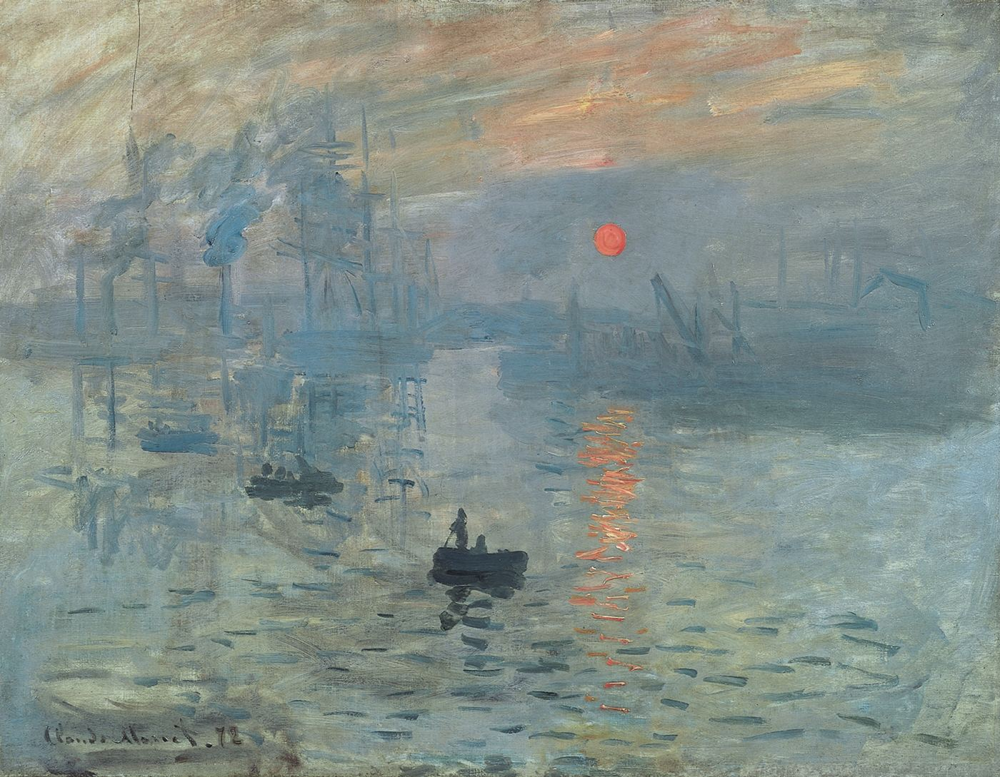
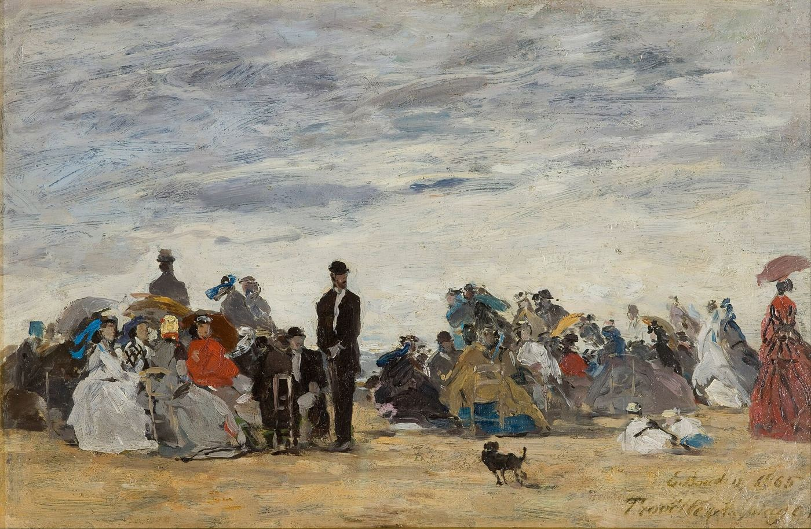
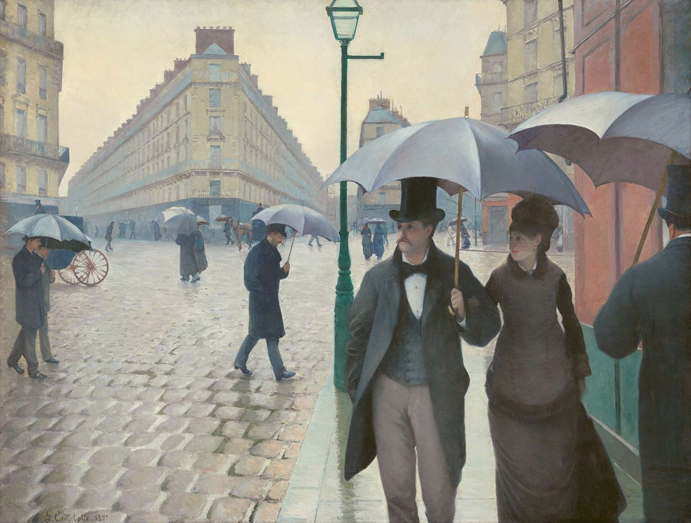
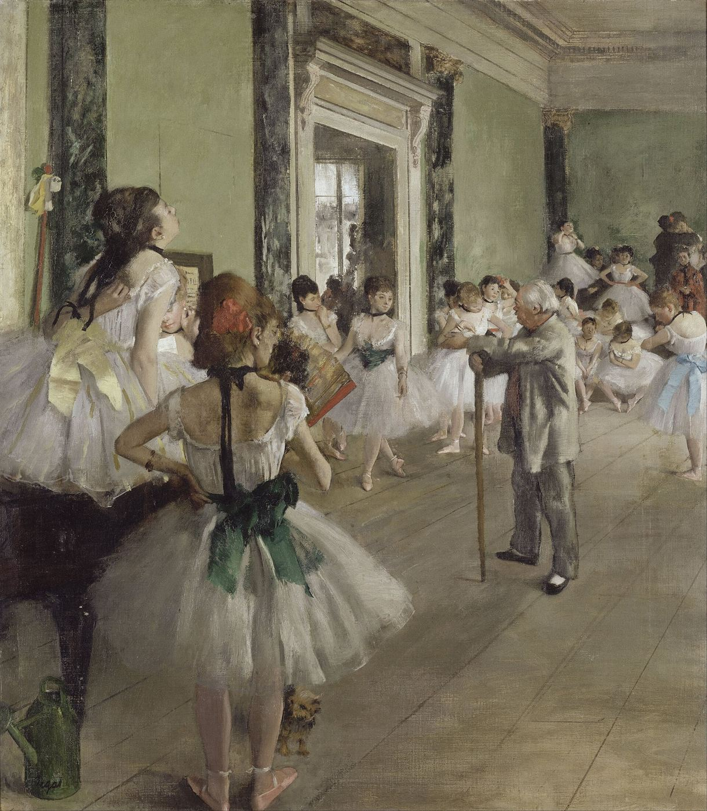
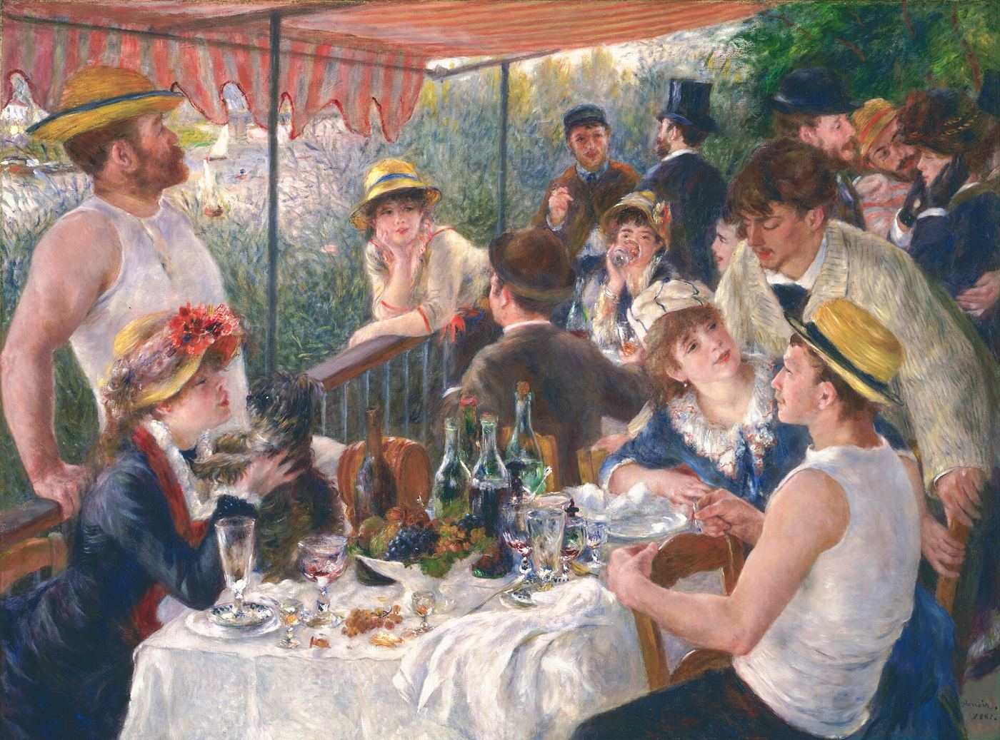
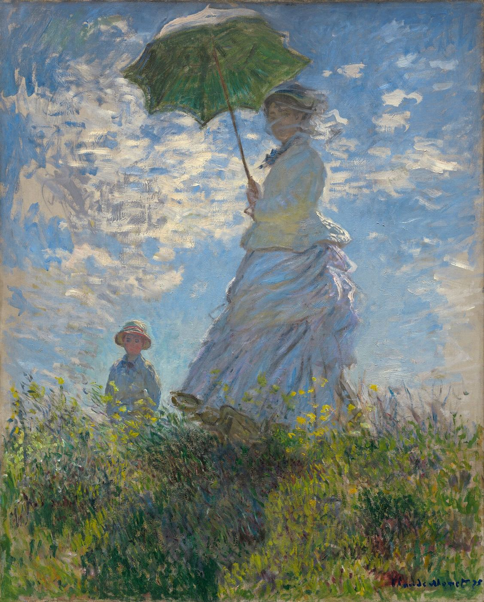
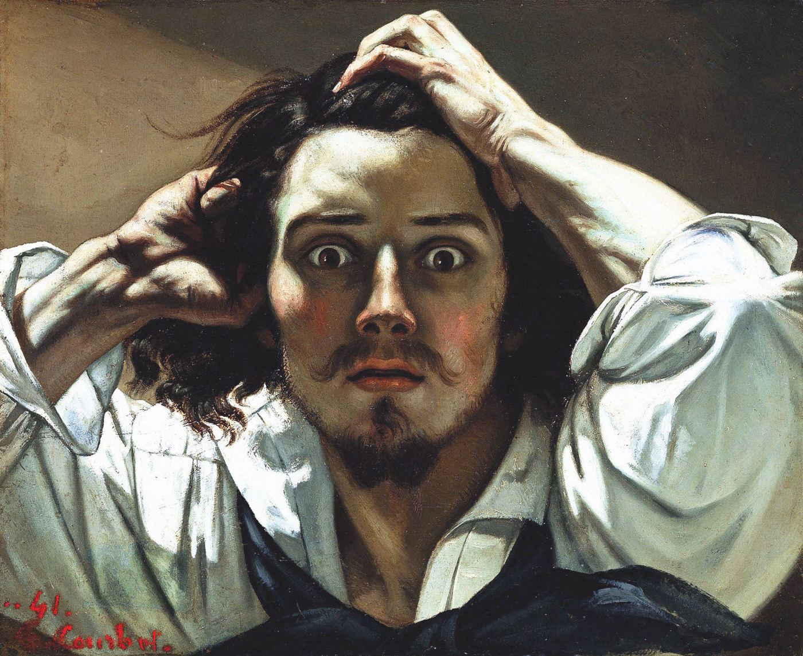
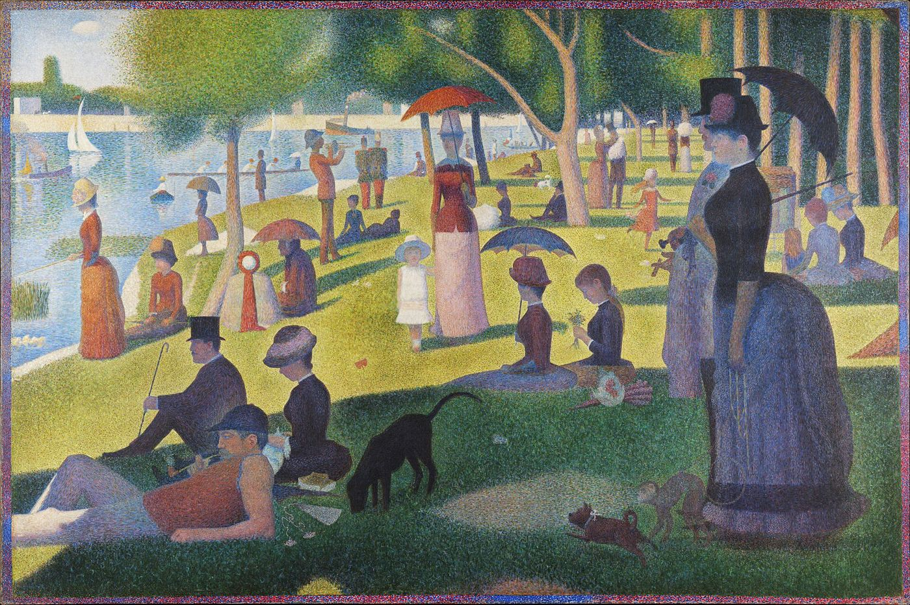
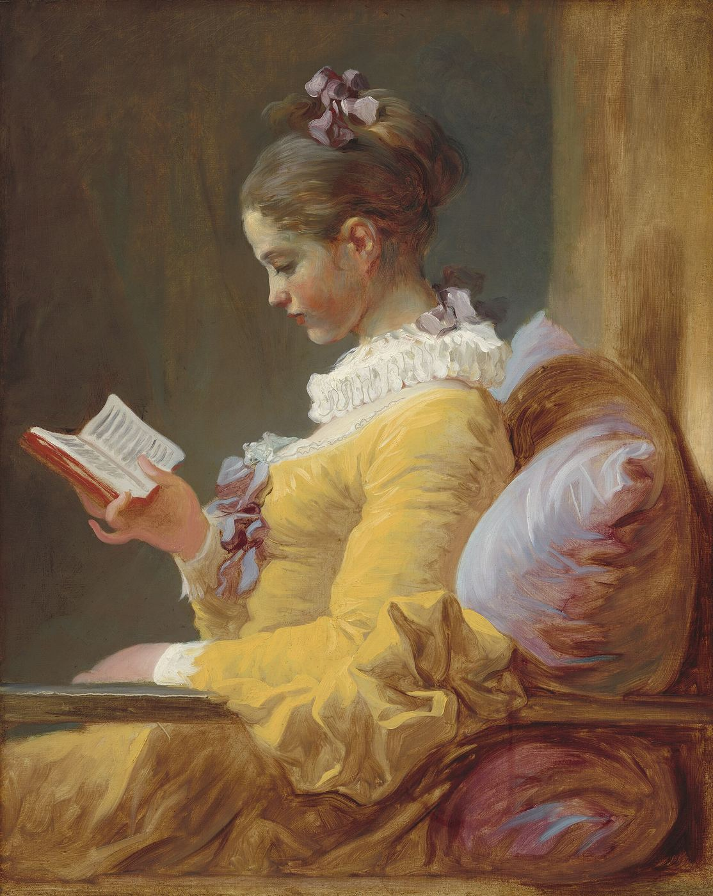

Le retour de vacances
L'été dernier, nous (passer) avons passé trois semaines en Normandie. Il (faire) faisait beau et nous (s’entendre) nous entendions très bien avec nos voisins de camping. Le dernier jour, mon fils (tomber) est tombé sur les rochers et il (se casser) s'est cassé le pied. Quand nous (rentrer) sommes rentrés à Paris, nous (avoir) avons eu une mauvaise surprise : des voleurs (cambrioler) avaient cambriolé l'appartement ! Ils (prendre) avaient pris l'ordinateur et les bijoux. Heureusement, la voisine (déjà appeler) avait déjà appelé la police. Aujourd'hui, nous (vivre) vivons toujours dans ce quartier, mais nous (être) sommes plus prudents.

POUR FABRIZIO
Vocabulaire, expressions et grammaire9 novembre 2026
Claude Monet, Impression, soleil levant, 1872 · Musée Marmottan Monet, Paris
Bonjour Fabrizio !
Aujourd'hui : huit mots et expressions de la vie quotidienne, le verbe vivre, et le plus-que-parfait pour raconter une histoire. Ensuite, cinq exercices pour tout mettre en pratique.
Oggi: otto parole ed espressioni della vita quotidiana, il verbo «vivre» e il trapassato prossimo per raccontare una storia. Poi cinque esercizi per mettere tutto in pratica.
▶ Chaque phrase et chaque explication a son audio. Écoute et répète.
Ogni frase e ogni spiegazione ha il suo audio. Ascolta e ripeti.
IT : la traduction italienne. Essaie d'abord sans !
La traduzione italiana. Prova prima senza!
🙈 Dans les tableaux, cache les formes et récite-les : clique sur une forme pour vérifier.
Nelle tabelle, nascondi le forme e recitale: clicca su una forma per verificare.
★ Tes erreurs vont dans « À revoir », à la fin, avec un lien vers la règle.
I tuoi errori vanno in «À revoir», alla fine, con un link alla regola.
1
Le vocabulaire
Il vocabolario
Huit mots et expressions de la vie de tous les jours. Lis le mot, essaie de deviner le sens, puis retourne la carte : tu trouves la traduction, des exemples et une petite remarque.
Otto parole ed espressioni della vita di tutti i giorni. Leggi la parola, prova a indovinarne il significato, poi gira la carta: trovi la traduzione, degli esempi e una piccola nota.
locution verbale
être en congé
Clique pour retourner la carte
être en congé
essere in ferie, in congedo
Je suis en congé jusqu'à lundi : je ne réponds pas aux e-mails.
Sono in ferie fino a lunedì: non rispondo alle e-mail.
Ma collègue est en congé maternité.
La mia collega è in congedo di maternità.
On l'utilise pour le travail : le salarié ne travaille pas. On dit aussi : prendre un congé, un congé maladie.
Si usa per il lavoro. Si dice anche: prendere un congedo, un congedo per malattia.

locution verbale
être en vacances
Clique pour retourner la carte
Eugène Boudin, La Plage de Trouville
être en vacances
essere in vacanza
Cet été, nous serons en vacances en Bretagne.
Quest'estate saremo in vacanza in Bretagna.
Les enfants sont en vacances depuis vendredi.
I bambini sono in vacanza da venerdì.
Les vacances est toujours au pluriel : de bonnes vacances. On part en vacances, on rentre de vacances.
«Les vacances» è sempre plurale. Si parte «en vacances», si torna «de vacances».

verbe
cambrioler
Clique pour retourner la carte
Gustave Caillebotte, Rue de Paris, temps de pluie, 1877
cambrioler
svaligiare, scassinare
Pendant notre absence, des voleurs ont cambriolé la maison.
Durante la nostra assenza, dei ladri hanno svaligiato la casa.
Notre voisin s'est fait cambrioler la semaine dernière.
Il nostro vicino ha subito un furto in casa la settimana scorsa.
La famille du mot : un cambriolage (il furto in casa), un cambrioleur (lo scassinatore).
La famiglia della parola: un cambriolage, un cambrioleur.

adjectif
raide
Clique pour retourner la carte
Edgar Degas, La Classe de danse, 1873-1876
raide
rigido · ripido · liscio (capelli)
Après le sport, j'ai les jambes raides.
Dopo lo sport, ho le gambe rigide.
Le chemin est très raide : attention en descendant !
Il sentiero è molto ripido: attenzione scendendo!
Elle a les cheveux longs et raides.
Ha i capelli lunghi e lisci.
Un mot, trois sens : un corps raide (qui ne plie pas), une pente raide (qui monte fort), des cheveux raides (le contraire de bouclés).
Una parola, tre significati: rigido, ripido, liscio.
verbe pronominal
se casser le pied
Clique pour retourner la carte
se casser le pied
rompersi il piede
Mon frère s'est cassé le pied au ski.
Mio fratello si è rotto il piede sugli sci.
Elle s'est cassé le pied en tombant dans l'escalier.
Si è rotta il piede cadendo dalle scale.
Avec une partie du corps, on dit le, pas mon : je me casse le bras. Au passé composé, pas d'accord : elle s'est cassé le pied (le complément est après le verbe).
Con una parte del corpo si usa l'articolo, non il possessivo. Al passato prossimo, nessun accordo: «elle s'est cassé le pied».

verbe pronominal
s'entendre · bien s'entendre avec quelqu'un
Clique pour retourner la carte
Auguste Renoir, Le Déjeuner des canotiers, 1880-1881
s'entendre · bien s'entendre avec quelqu'un
andare d'accordo (con qualcuno)
Je m'entends très bien avec mes collègues.
Vado molto d'accordo con i miei colleghi.
Mes deux fils ne s'entendent pas du tout.
I miei due figli non vanno per niente d'accordo.
On s'entend sur le prix ?
Siamo d'accordo sul prezzo?
bien / mal s'entendre avec quelqu'un. Attention : Parle plus fort, on ne s'entend pas ! = on n'arrive pas à entendre.
Andare d'accordo / non andare d'accordo con qualcuno. Attenzione: «on ne s'entend pas» può anche voler dire «non si sente niente».

locution prépositive
par rapport à
Clique pour retourner la carte
Claude Monet, La Promenade, la femme à l'ombrelle, 1875
par rapport à
rispetto a, in confronto a
Par rapport à l'année dernière, les prix ont beaucoup augmenté.
Rispetto all'anno scorso, i prezzi sono aumentati molto.
Lyon est petite par rapport à Paris.
Lione è piccola in confronto a Parigi.
Elle sert à comparer. Attention à la contraction : par rapport au passé, par rapport aux autres.
Serve a confrontare. Attenzione alle preposizioni articolate: au, aux.

locution verbale
être fâché (avec / contre quelqu'un)
Clique pour retourner la carte
Gustave Courbet, Le Désespéré, 1843-1845
être fâché (avec / contre quelqu'un)
essere arrabbiato · essere in rotta (con qualcuno)
Mon père est fâché contre moi parce que je suis rentré tard.
Mio padre è arrabbiato con me perché sono rientrato tardi.
Ils sont fâchés depuis des années : ils ne se parlent plus.
Sono in rotta da anni: non si parlano più.
fâché contre quelqu'un = en colère, pour un moment. fâché avec quelqu'un = on ne se parle plus.
«fâché contre»: arrabbiato per un momento. «fâché avec»: non ci si parla più.

Georges Seurat, Un dimanche après-midi à l'île de la Grande Jatte, 1884-1886 · Art Institute of Chicago
2
Le verbe vivre
Il verbo vivere
Vivre au présent
Vivere al presente
Vivre est un verbe irrégulier. Au singulier, on entend la même chose : je vis, tu vis, il vit. Au pluriel, le v revient : nous vivons.
«Vivre» è un verbo irregolare. Al singolare si sente la stessa cosa. Al plurale ritorna la «v».
| je \1 | io vivo | |
| tu \1 | tu vivi | |
| il / elle \1 | lui / lei vive | |
| nous \1 | noi viviamo | |
| vous \1 | voi vivete | |
| ils / elles \1 | loro vivono |
Le participe passé : vécu
Le participe passé de vivre est vécu. Au passé composé, on utilise avoir : j'ai vécu.
Il participio passato di «vivre» è «vécu». Al passato prossimo si usa «avoir».
J'ai vécu trois ans à Lyon avant de m'installer à Paris.
Ho vissuto tre anni a Lione prima di trasferirmi a Parigi.
Nous avons vécu une expérience inoubliable.
Abbiamo vissuto un'esperienza indimenticabile.
Vivre ou habiter ?
Habiter = avoir son logement quelque part. Vivre = c'est plus large : sa vie, une expérience, une période.
«Habiter» = avere la propria casa da qualche parte. «Vivre» è più ampio: la vita, un'esperienza, un periodo.
J'habite rue Lepic. Je vis à Paris depuis dix ans. Nous vivons une période difficile.
Abito in rue Lepic. Vivo a Parigi da dieci anni. Stiamo vivendo un periodo difficile.

Jean-Honoré Fragonard, La Liseuse, vers 1770 · National Gallery of Art, Washington
3
Le plus-que-parfait dans le récit
Il trapassato prossimo nel racconto
À quoi sert le plus-que-parfait ?
A cosa serve il trapassato prossimo?
Le plus-que-parfait exprime une action passée qui a eu lieu avant une autre action passée.
Il trapassato prossimo esprime un'azione passata avvenuta prima di un'altra azione passata.
Dans un récit, il permet de revenir en arrière : c'est un retour en arrière dans l'histoire.
In un racconto, permette di tornare indietro nel tempo.
avais / étais+participe passé
auxiliaire avoir ou être à l'imparfait + participe passé
ausiliare avere o essere all'imperfetto + participio passato
hier soir, 20 h
Des voleurs avaient cambriolé la maison.
action 1 · plus-que-parfait
hier soir, 22 h
Quand nous sommes rentrés, …
action 2 · passé composé
décor
… la porte était ouverte.
description · imparfait
Dans le récit, on entend d'abord l'action 2, mais l'action 1 s'est passée avant : on la met au plus-que-parfait.
Nel racconto si sente prima l'azione 2, ma l'azione 1 è avvenuta prima: la si mette al trapassato prossimo.
Quand nous sommes rentrés, la porte était ouverte : des voleurs avaient cambriolé la maison.
Quando siamo rientrati, la porta era aperta: dei ladri avevano svaligiato la casa.
🔎 Les mots signaux
Mots qui l'annoncent souvent : déjà, avant, la veille, parce que, quand, ne… pas encore.
Parole che lo annunciano spesso: già, prima, il giorno prima, perché, quando, non ancora.
Exemples
Quand nous sommes rentrés de vacances, des voleurs avaient cambriolé la maison.
Quando siamo tornati dalle vacanze, dei ladri avevano svaligiato la casa.
Il est arrivé en retard parce qu'il avait raté le bus.
È arrivato in ritardo perché aveva perso l'autobus.
Elle était fâchée : son frère avait oublié son anniversaire.
Era arrabbiata: suo fratello aveva dimenticato il suo compleanno.
J'ai enfin vu le film dont tu m'avais parlé.
Ho finalmente visto il film di cui mi avevi parlato.
La conjugaison
La coniugazione
Avec avoir : finir
| j'avais fini | avevo finito | |
| tu avais fini | avevi finito | |
| il / elle avait fini | aveva finito | |
| nous avions fini | avevamo finito | |
| vous aviez fini | avevate finito | |
| ils / elles avaient fini | avevano finito |
Avec être : partir
| j'étais parti(e) | ero partito/a | |
| tu étais parti(e) | eri partito/a | |
| il / elle était parti(e) | era partito/a | |
| nous étions parti(e)s | eravamo partiti/e | |
| vous étiez parti(e)s | eravate partiti/e | |
| ils / elles étaient parti(e)s | erano partiti/e |
Rappel
Comme au passé composé : avec être, le participe s'accorde avec le sujet (elle était partie). Les verbes pronominaux se conjuguent avec être (je m'étais cassé le pied).
Come al passato prossimo: con «être» il participio si accorda col soggetto. I verbi pronominali si coniugano con «être».
Comme en italien
Bonne nouvelle : c'est comme le trapassato prossimo italien (avevo finito, ero partito). Mais attention à l'auxiliaire : j'avais vécu = avevo vissuto, mais j'avais été = ero stato.
Buona notizia: è come il trapassato prossimo italiano. Ma attenzione all'ausiliare: «j'avais été» = «ero stato».
Les 20 verbes à connaître
I 20 verbi da conoscere
Voici les verbes les plus utilisés au plus-que-parfait. Écoute, répète, puis cache la colonne et récite.
Ecco i verbi più usati al trapassato prossimo. Ascolta, ripeti, poi nascondi la colonna e recita.
| être | j'avais été | ero stato |
| avoir | j'avais eu | avevo avuto |
| faire | j'avais fait | avevo fatto |
| aller | j'étais allé(e) | ero andato/a |
| venir | j'étais venu(e) | ero venuto/a |
| partir | j'étais parti(e) | ero partito/a |
| arriver | j'étais arrivé(e) | ero arrivato/a |
| rentrer | j'étais rentré(e) | ero rientrato/a |
| prendre | j'avais pris | avevo preso |
| voir | j'avais vu | avevo visto |
| dire | j'avais dit | avevo detto |
| mettre | j'avais mis | avevo messo |
| pouvoir | j'avais pu | avevo potuto |
| vouloir | j'avais voulu | avevo voluto |
| devoir | j'avais dû | avevo dovuto |
| savoir | j'avais su | avevo saputo |
| vivre | j'avais vécu | avevo vissuto |
| oublier | j'avais oublié | avevo dimenticato |
| se casser | je m'étais cassé | mi ero rotto |
| s'entendre | nous nous étions bien entendus | eravamo andati d'accordo |
Gustave Caillebotte, Rue de Paris, temps de pluie, 1877 · Art Institute of Chicago
4
Je m'entraîne
Mi esercito
1
VOCABULAIRE
Complète chaque phrase avec un mot de la liste, puis clique sur OK.
Completa ogni frase con una parola della lista, poi clicca su OK.
cambrioléen congéentendsPar rapport àcasséraidesfâchéen vacancesvécu
1
Pendant nos vacances, des voleurs ont notre appartement.
Durante le nostre vacanze, dei ladri hanno svaligiato il nostro appartamento.
✓ Pendant nos vacances, des voleurs ont cambriolé notre appartement.
2
Je ne travaille pas cette semaine : je suis .
Non lavoro questa settimana: sono in ferie.
✓ Je ne travaille pas cette semaine : je suis en congé.
3
Je m' très bien avec ma belle-sœur.
Vado molto d'accordo con mia cognata.
✓ Je m'entends très bien avec ma belle-sœur.
4
l'année dernière, il y a plus de touristes.
Rispetto all'anno scorso, ci sono più turisti.
✓ Par rapport à l'année dernière, il y a plus de touristes.
5
Il est tombé en skiant et il s'est le pied.
È caduto sciando e si è rotto il piede.
✓ Il est tombé en skiant et il s'est cassé le pied.
6
Ma fille a les cheveux comme sa grand-mère.
Mia figlia ha i capelli lisci come sua nonna.
✓ Ma fille a les cheveux raides comme sa grand-mère.
7
Il ne me parle plus : il est avec moi depuis la fête.
Non mi parla più: è in rotta con me dalla festa.
✓ Il ne me parle plus : il est fâché avec moi depuis la fête.
8
Les enfants sont jusqu'au 3 janvier.
I bambini sono in vacanza fino al 3 gennaio.
✓ Les enfants sont en vacances jusqu'au 3 janvier.
9
Nous avons dix ans en Italie avant de venir en France.
Abbiamo vissuto dieci anni in Italia prima di venire in Francia.
✓ Nous avons vécu dix ans en Italie avant de venir en France.
2
VERBES
Conjugue le verbe au temps demandé.
Coniuga il verbo al tempo richiesto.
1
Mes parents (vivre, présent) à Turin.
I miei genitori vivono a Torino.
✓ Mes parents vivent à Turin.
2
Nous (vivre, présent) à Paris depuis 2020.
Viviamo a Parigi dal 2020.
✓ Nous vivons à Paris depuis 2020.
3
Tu (vivre, présent) seul ou en colocation ?
Vivi da solo o in coinquilinato?
✓ Tu vis seul ou en colocation ?
4
Pendant son voyage, elle (vivre, passé composé) une grande aventure.
Durante il suo viaggio, ha vissuto una grande avventura.
✓ Pendant son voyage, elle a vécu une grande aventure.
5
Quand je suis arrivé à la gare, le train (partir, plus-que-parfait) .
Quando sono arrivato alla stazione, il treno era partito.
✓ Quand je suis arrivé à la gare, le train était parti.
6
Elle était fatiguée parce qu'elle (travailler, plus-que-parfait) toute la nuit.
Era stanca perché aveva lavorato tutta la notte.
✓ Elle était fatiguée parce qu'elle avait travaillé toute la nuit.
7
La veille du match, il (se casser, plus-que-parfait) le pied.
Il giorno prima della partita, si era rotto il piede.
✓ La veille du match, il s'était cassé le pied.
8
Je (ne pas encore finir, plus-que-parfait) quand tu as appelé.
Non avevo ancora finito quando hai chiamato.
✓ Je n'avais pas encore fini quand tu as appelé.
3
TEXTE À CONJUGUER
Le retour de vacances : mets les verbes au bon temps.
Il ritorno dalle vacanze: metti i verbi al tempo giusto.
Lis tout le texte une première fois. Puis conjugue chaque verbe : passé composé, imparfait, plus-que-parfait ou présent.
Leggi tutto il testo una prima volta. Poi coniuga ogni verbo: passato prossimo, imperfetto, trapassato prossimo o presente.
Traduction du texte
L'estate scorsa abbiamo passato tre settimane in Normandia. Faceva bello e andavamo molto d'accordo con i nostri vicini di campeggio. L'ultimo giorno, mio figlio è caduto sugli scogli e si è rotto il piede. Quando siamo rientrati a Parigi, abbiamo avuto una brutta sorpresa: dei ladri avevano svaligiato l'appartamento! Avevano preso il computer e i gioielli. Per fortuna, la vicina aveva già chiamato la polizia. Oggi viviamo ancora in questo quartiere, ma siamo più prudenti.
4
TRADUCTION
Traduis en français. Puis regarde la correction et dis honnêtement si tu avais juste.
Traduci in francese. Poi guarda la correzione e di' onestamente se era giusto.
1
Sono in ferie fino al 15 gennaio.
✓ Je suis en congé jusqu'au 15 janvier.
2
Rispetto a Milano, Parigi è più cara.
✓ Par rapport à Milan, Paris est plus chère.
3
Vado molto d'accordo con mia sorella.
✓ Je m'entends très bien avec ma sœur.
4
Durante le vacanze, dei ladri hanno svaligiato la casa dei nostri vicini.
✓ Pendant les vacances, des voleurs ont cambriolé la maison de nos voisins.
5
Quando sono arrivato, il film era già cominciato.
✓ Quand je suis arrivé, le film avait déjà commencé.
6
Mia madre è arrabbiata con me perché avevo dimenticato il suo compleanno.
✓ Ma mère est fâchée contre moi parce que j'avais oublié son anniversaire.
7
Abbiamo vissuto due anni in Francia.
✓ Nous avons vécu deux ans en France.
5
RÉFLEXION
Un sujet d'actualité : donne ton avis dans un petit texte organisé.
Un tema d'attualità: esprimi la tua opinione in un breve testo organizzato.
Le Mont-Saint-Michel, en Normandie · Plusieurs millions de visiteurs chaque année
Le surtourisme : faut-il limiter le nombre de visiteurs ?
Chaque été, les lieux les plus célèbres sont envahis par les touristes. Depuis 2024, Venise fait payer une taxe d'entrée aux visiteurs qui viennent seulement pour la journée.
Ogni estate i luoghi più famosi sono invasi dai turisti. Dal 2024, Venezia fa pagare un contributo d'accesso ai visitatori giornalieri.
En France, certaines calanques près de Marseille ne sont accessibles en été que sur réservation. Les habitants se plaignent du bruit, des prix et des embouteillages, mais le tourisme fait aussi vivre beaucoup de familles.
In Francia, alcune calanche vicino a Marsiglia in estate sono accessibili solo su prenotazione. Gli abitanti si lamentano del rumore, dei prezzi e degli ingorghi, ma il turismo fa anche vivere molte famiglie.
Pour trouver tes idées
- Est-ce que tu as déjà vécu une mauvaise expérience à cause de la foule, en vacances ?Hai già vissuto una brutta esperienza a causa della folla, in vacanza?
- Quels sont les avantages du tourisme pour une ville ? Et les problèmes pour les habitants ?Quali sono i vantaggi del turismo per una città? E i problemi per gli abitanti?
- Faire payer, réserver, limiter le nombre de visiteurs : quelle solution te semble juste ?Far pagare, prenotare, limitare il numero di visitatori: quale soluzione ti sembra giusta?
Pour organiser ton texte
IntroductionAujourd'hui, de nombreux sites… On peut se demander si…
Présente le problème en une ou deux phrases et pose la question.
Presenta il problema e poni la domanda.
DéveloppementD'un côté… De l'autre… Par exemple, l'été dernier…
D'un côté, les avantages du tourisme. De l'autre, les problèmes. Donne un exemple que tu as vécu.
Da un lato i vantaggi, dall'altro i problemi. Fai un esempio vissuto.
ConclusionEn conclusion, à mon avis… C'est pourquoi il faudrait…
Donne ton avis et propose une solution.
Dai la tua opinione e proponi una soluzione.
Mots utiles (clique pour les ajouter)
Voir un exemple de texte
Aujourd'hui, de nombreux sites célèbres reçoivent trop de visiteurs, surtout en été. On peut se demander s'il faut limiter leur nombre. D'un côté, le tourisme fait vivre beaucoup de familles : les hôtels, les restaurants et les commerçants en ont besoin. De l'autre, les habitants souffrent du bruit et des prix, et les lieux s'abîment. Par exemple, l'été dernier, j'avais réservé une visite au Mont-Saint-Michel, mais la foule était telle que je n'ai presque rien vu. Par rapport à il y a vingt ans, le problème est beaucoup plus grave. En conclusion, à mon avis, il ne faut pas fermer ces lieux, mais il faut organiser les visites. C'est pourquoi je trouve que la réservation est une solution juste : elle permet de préserver les sites et la qualité de vie des habitants.
Oggi molti siti famosi ricevono troppi visitatori, soprattutto d'estate. Ci si può chiedere se bisogna limitarne il numero. Da un lato, il turismo fa vivere molte famiglie: alberghi, ristoranti e commercianti ne hanno bisogno. Dall'altro, gli abitanti soffrono per il rumore e i prezzi, e i luoghi si rovinano. Per esempio, l'estate scorsa avevo prenotato una visita al Mont-Saint-Michel, ma c'era una tale folla che non ho visto quasi niente. Rispetto a vent'anni fa, il problema è molto più grave. In conclusione, secondo me, non bisogna chiudere questi luoghi, ma bisogna organizzare le visite. Per questo trovo che la prenotazione sia una soluzione giusta: permette di preservare i siti e la qualità della vita degli abitanti.
Auguste Renoir, Le Déjeuner des canotiers, 1880-1881 · The Phillips Collection, Washington
★
À revoir
Da ripassare
Clique sur le lien pour relire la règle ou le mot, puis écoute la bonne réponse et répète-la.
Clicca sul link per rileggere la regola o la parola, poi ascolta la risposta giusta e ripetila.
Pas encore d'erreur. Les points à revoir apparaissent ici quand tu fais les exercices.
| Ex. | La bonne réponse | Ma réponse | À revoir |
|---|